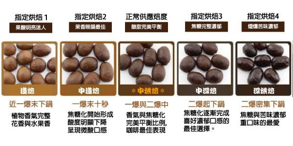

咖啡豆
咖啡豆是咖啡属植物的种子，以胚乳占大部分体积。咖啡属植物的果实（咖啡果）形似樱桃，植物学上属于核果。将咖啡豆烘焙加工后再磨碎成咖啡粉，即可烹制咖啡。
咖啡豆的三大种类

阿拉比卡（Arabica）
-
阿拉比卡是最早為人所知的咖啡樹品種，也是最常見的咖啡。阿拉比卡咖啡佔全球咖啡產量的70%，但它栽種起來較為困難，因為它容易遭受病蟲害和霜害侵襲，因此價格也比較昂貴。但是世界各地的許多咖啡飲用者都樂於為此付出代價，因為其口味更柔和，更甜。
羅布斯塔（Robusta）
-
在全球生產方面，羅布斯塔咖啡豆排在第二位，在歐洲，中東和非洲最受歡迎。它的味道通常較為濃烈並且刺鼻。由於羅布斯塔咖啡因會品嚐到燒焦或橡膠質而聞名，除非比較喜歡特別濃郁的咖啡，否則羅布斯塔咖啡通常不是很受歡迎的品種。
賴比瑞亞（Liberica）
-
賴比瑞亞咖啡品種是相當少見的。它們生長在非常特殊的氣候下，產量太過稀少，農民們無法擴大栽種規模以滿足全球市場的需求。即使如此，賴比瑞亞咖啡豆的味道也被認為是令人驚艷的。許多嘗試過該咖啡的人將香氣比喻為水果和花朵，並形容其味道有些“木質”。
咖啡豆的烘培程度

 New Era University College
New Era University College
 016-986 3069
016-986 3069
 tehsiawtian1019@e.newera.edu.my
tehsiawtian1019@e.newera.edu.my
*Press the email above to message